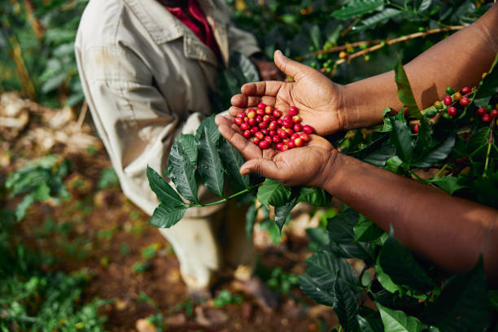

Deep in the heart of Texas, Buck "Tex" Thornton and Sipho "Safari" Nkosi, bonded by a love for coffee, joined forces to create "Tex & Safari's Roast Roundup." Blending Texan boldness with African adventure, their flagship "Lone Star Safari" roast became a global sensation. With cowboy hats on lions and longhorns sipping coffee, their coffee shops became hubs of cross-continental camaraderie, where every cup told a tale of rugged terrains and untamed flavors. The legend of Tex & Safari's lives on, leaving behind a legacy as bold as the brew itself.
